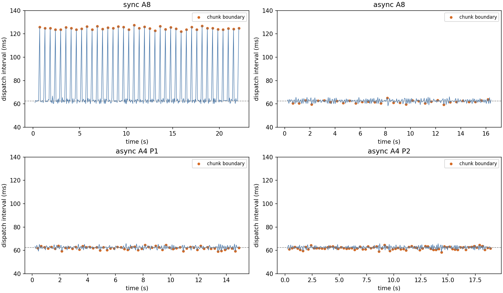

2026-10-12。以下为修正前的机制分析，范围限定为不必要的工程约束与设计问题，不用模型泛化、RGB 或数据量解释失败。依据当时源码、10 月 11 日原始实验及 10 月 12 日四轮已完成试验；原始实验数据保持不变。
后续修正已落实，尚未真机验证：sync 结果就绪后读取新反馈并执行，取消额外整拍等待；async/RTC 删除名义拍点的模型完成截止，改用实际消费与拍末下发边界；删除 warmup 推算准入和停用的软件触觉偏置代码；XHand 不再接受过流为成功或 CRC 为新反馈，局部触觉缺测按板卡及合力/分布力分别处理；T 及新录制元数据改称传感器复位请求，不声称零点已确认。当前代码的离线验证见 假时钟／假 SDK 检查与 结果及源码哈希。下文的 check_mechanisms.py 和反例结果是旧实现的分析证据，不是当前代码的验收检查。本轮没有连接设备；Mode 6 物理跟随与 Mode 1 选择仍需固定轨迹对照。
修正此前判断：async A4 只是目前发送连续、观测较新的实验基线，不能据此宣布控制链路已经解决。现有证据支持：sync 存在可避免的整拍等待；async 的截止时间与实际执行时机不一致；Mode 6 的物理跟随误差仍然存在；XHand 对错误码和数据有效性的处理有独立问题。大量逐帧检查并非百毫秒滞后的主要耗时来源。
复现入口：Raw 统计脚本、完整指标、离线机制反例、反例与 SDK 证据、已安装 SDK 的反汇编摘录。图中时间是主机调用边界，不是固件内部轨迹或电机采样时刻。
当前路径是：执行块末动作 → 清空 plan → 下一控制拍读取观测并提交推理 → 结果返回后将 handoff 固定到下一整拍 → 执行下一块动作。_poll_model() 对每个 sync 查询都按 bootstrap 保留预测头部，并使用 floor(now / dt) + 1 选择交接拍。
| 实测 | sync A8 | async A8 | async A4，P1 / P2 |
|---|---|---|---|
| 推理调用中位数 | 27.99 ms | 38.91 ms | 38.91 / 38.77 ms |
| 块间发送间隔中位数 | 124.78 ms | 61.73 ms | 62.06 / 61.95 ms |
| 块尾点云源年龄中位数 | 531.96 ms | 543.12 ms | 286.55 / 286.52 ms |
| 块尾关节源年龄中位数 | 511.77 ms | 512.07 ms | 261.74 / 261.76 ms |
sync 的 39 次交接均出现约 125 ms 间隔；不是“模型需要 125 ms”。A8 稳态每 9 个控制拍发送 8 个动作，平均约 14.22 次/秒。停发期间 Mode 6 可能继续追向旧端点，不能把停发等同物理静止。
分类：调度效率与时间语义问题，属于（2）（3）。同步推理确实可能延长动作间隔，但本实现还额外把结果消费量化到未来整拍。简单阻塞式 sync 可以去掉这种专门的空拍；它仍不保证所有发送间隔严格相同。不能一边要求完全同步、一边要求每拍固定时刻发送，又不为推理留时间。
最小方向：实际部署继续使用一个控制线程、一个推理 worker、至多一个在途查询的 async。sync 如保留，作为语义清晰的阻塞基线，不再承担复杂的“等未来整拍再交接”逻辑。不要为了修 sync 再建一套调度框架，也不要把提前推理改名为 sync。

现在要求非 bootstrap 查询在 handoff 名义拍点前完成。然而该拍仍需先同步读取机械臂和手反馈，约 11.7 ms 后才到消费结果的位置。结果已经可用、也仍处在当前拍内，仅因为晚于名义拍点就会停机。
执行真实方法体的离线反例：名义拍点 625 ms，结果 630 ms 就绪，637 ms 消费，本拍结束于 687.5 ms。当前 _handoff() 返回 handoff_model_deadline_exceeded。这证明该约束强于实际消费需求。
反向问题也存在：step() 在读反馈前计算 slot；_dispatch_deadline_ns() 只合并反馈新鲜度、决策年龄等限制，没有当前拍结束时间。另一反例在 625 ms 进入本拍，模拟一次 70 ms 的读反馈阻塞，真实 step → _execute_slot → _dispatch_deadline_ns 路径在 695 ms 仍将旧拍动作交给假机器人；其 deadline 是 758.53 ms，而本拍已在 687.5 ms 结束。
这是源码机制反例，不是宣称真机发生了上述超拍发送。三轮 async 共 166 次块交接，结果均提前约 8–13 ms 就绪；没有模型迟到导致的中止，现有发送段也没有跨过 62.5 ms。因此这些设计缺陷需要修正，但不能拿来解释四轮已观察到的所有抓取失败。
最小修改：统一使用“消费时结果已就绪、对应的执行时刻仍有效、反馈与授权有效”。去掉独立的“completed 必须早于拍点”拒绝分支，把现有下一拍时刻纳入已存在的发送 deadline，并在阻塞读操作后使用实际时间判断。保留无结果、失效反馈、授权撤销等真实边界；不增加宽限参数、补发队列、缓存回退或重试状态机。SDK 调用本身仍可能阻塞，主机 deadline 不能保证物理硬实时。
当前预测索引本身没有发现简单的 off-by-one：H=16、N=2，模型导出 P=15；首次 bootstrap 用 0…A−1；d=1 的稳态查询从下一拍使用预测索引 1，A4 用 1…4，A8 用 1…8。直接改成索引 0 会执行已经过去的预测时刻。异步计算期间执行的是旧计划，新计划未必与其连续；正确时间索引不等于动作块连续性，不能靠改索引修复拼接跳变。
async A8 消除了空拍，却仍连续执行约半秒才使用新观测。A4 才把块尾源年龄降到约 0.29 s。每拍读取新反馈主要用于安全、动作实现和采集，不能自动更新已经算出的后续动作。max_decision_age_s=1 通过只是未超预算，不是反馈足够及时的证明。
块边界的“七关节最大目标跳变量”中位数：sync A8 4.98°、async A8 3.00°、两次 async A4 1.88°/1.94°；相应块内约 1.12°、1.05°、0.94°/0.88°。各次布局与轨迹不同，不能据此宣称 A4 因果提升成功率；可以确认实际新旧动作块并非总是平滑衔接。
最小方向：先固定 A4、d1 做控制机制对照。A2 是之后一个现成配置实验，不需要代码，但它只提高观测更新频率，不能校正机械臂物理滞后。当前 ManiFlow 路径不应为此新增 RTC 算法适配、temporal ensemble、EMA 或任意平滑；这些会改动作语义并可能增加延迟。
| 当前 16 Hz 路径，四轮中位数范围 | 测得时间 | 含义 |
|---|---|---|
| control 开始到臂反馈返回 | 0.32 ms | 含 SDK RPC 与少量 owner 处理，不支持网络本身存在 170 ms 延迟的解释 |
| 臂反馈到手反馈返回 | 11.01–11.05 ms | 串行读手占主要时间，包含解析 |
| 手反馈到构造完整 observation | 0.35–0.36 ms | 获取其他模态与数据构造 |
| observation 到普通下发 | 0.36–0.37 ms | 校验、动作实现和 owner 逻辑的合计 |
| 含 prefetch 的同一段 | 0.52–0.60 ms | 额外输入准备并非几十毫秒 |
| 整次臂手 SDK 发送 | 10.91–10.99 ms | 不能把整段都记为机械臂网络发送耗时 |
| control 开始到发送完成 | 22.31–22.57 ms | 16 Hz 能容纳；整条链直接升到 100 Hz 不能容纳 |
因此“验证太多拖慢控制”在百毫秒尺度上不成立。优先删掉错误时间规则与无依据的成功分支；不要为省约 0.36 ms 删除发令前的关节限位、有限值、授权及停止检查。臂手目标在任何一个 SDK 调用前一起校验，也是在避免只动了臂才发现手目标无效，具有真实作用。
新四轮的 J5 活动段，用“先前已经发送完成的目标”做零阶保持匹配，最佳描述性移位分别为 166、168、226、168 ms。A4 P2 中 J5 相对先前已发目标的最大差为 13.07°。这些是随轨迹变化的描述指标，不能当成固定通信延迟，也不能直接用作统一前移补偿。16 Hz 采样与接收时间戳亦限制识别精度。
当前 XArm7.servo() 实际调用 Mode 6 的 set_servo_angle(wait=False)，而不是 Mode 1 的 servoj。Mode 6 接收的是带速度/加速度约束的目标端点；它不承诺在策略下一拍前到达。wait=False 仅表示不等待运动结束，调用仍存在通信应答，返回成功也不是已到位。没有发现每拍重新 set_mode 或软件 EMA 平滑是本路径的滞后来源。
一次读手使臂目标下发比臂反馈晚约 12 ms，这是串行组合设备的真实代价，量级仍不足以单独解释全部移位。async 推理调用比 sync 多约 11 ms，也与串行手 I/O 同量级；共享 Python 线程调度/GIL 或 CPU 竞争是待证实解释。这些统计不是纯 GPU kernel 耗时，目前不足以据此新增进程或替换 SDK。
第四轮张手阶段已有约 2–3 cm 的末端目标跟随偏差。即使目标轨迹本身也不理想，物理滞后仍可能改变实际松手位置。没有持物动力学与对照轨迹证据，不能分配两者贡献；也不能因为目标轨迹偏了就排除控制器问题。臂与手在同一行下发不代表同时到达，不应先凭经验增加“手延迟若干拍”。
UFACTORY 官方 servo 指南建议 Mode 1 使用固定频率平滑点，通常 50–200 Hz；低于 50 Hz 可能不连续，servoj 的 speed/mvacc/time 参数为保留参数。Mode 6 则由控制器进行在线规划。这支持把“低频策略动作”与“高频伺服点”区别处理。
| 参考实现 | 相关机制 | 对本项目的含义 |
|---|---|---|
| lerobot_robot_ufactory | 关节控制持续运动采用 Mode 6，set_servo_angle；eval 是读取/预测/发送/剩余时间 sleep | 支持简洁的 Mode 6 基线；不证明本机特定轨迹的跟随性能 |
| PF-DAG | Mode 1，默认 50 Hz 低层循环 | 参考的是持续低层伺服条件，不能只抄 set_mode(1) |
| RIO / rio-hw | 独立硬件节点，默认 250 Hz，轨迹插值；关节位置路径还有可选低通 | 低频请求与高频执行的职责边界值得参考；不需要移植 middleware、通用滤波器和整个节点框架 |
| pi-r2-flow | Mode 1 SDK streaming | 只能证明实现选择；其自动恢复、碰撞配置与有关参数的注释不能替代厂商 API 语义 |
| DexUMI / LeFranX | 已有前次逐源码调研：分别有 UR 高频执行、Franka 原生控制回路 | 可以借鉴控制与推理解耦；不能把 UR / Franka 的频率、gain 或 lookahead 原样迁移到 xArm |
当前判断：Mode 6 是简单、已运行的基线，尚未证明最适合本任务；Mode 1 是值得隔离比较的候选，尚未真机验证。不要将 16 Hz 全链路直接改成 Mode 1，也不要简单把控制频率整体改为 100 Hz。插值是低频轨迹接入高频 servo 所需的时间表达，可以保持非常小；额外平滑、队列预测和自适应补偿目前没有必要。
6.1 已确认：1501035 被错误地当作普通成功。已安装 /usr/lib/libxhand_control.so 的错误表将它映射为电流超过设定阈值持续 500 ms 的过流警告。当前 SEND_ACCEPTED_CODES 将其与 0 一起处理，导致 dispatch=ACCEPTED 无法区分该警告。这个码并不证明命令未送达，但也不能当作无告警成功。四轮 live 日志未记录它；因当前发送分支会吸收它，不能据此反推四轮一定未发生，也不能从电流峰值反推一定发生。
最小修改：从普通成功白名单移除，走既有非成功结束路径并保留原因；不增加电流阈值积分器、自动松手、重试或恢复。真实命令可能已到达，记录不要写成“确定未发送”。此前已改正 tor_max 是 0…400 的输出比例值而非 mA，这不会改变实际参数，也没有解决此返回码问题。
6.2 已确认关联：307 映射为 1501070，不能重复归因。本机 SDK 硬件错误映射表中，307 对应通信数据 CRC 错误。10 月 12 日 HOME 时相邻的 1501070 与 tip[2]=307 很可能是同一状态经两个层次报告。index 2 是 SDK 关节/板卡条目，对应触觉表中的拇指指尖条目，不能直接叫“第三个手指传感器”。历史只读 probe 首帧也出现 1501070，而且同时包含 tipboard 与 jointboard 的 307。
6.3 设计缺口：finite 不等于有效新反馈。当前只要 CRC 返回对象包含完整有限的 12 维关节位置，就接受关节值，并把时间戳更新为“现在”；板卡错误仅 warning。SDK 的 read_state 在请求后复制内部 HandState，且内部汇总错误可能来自不同板卡。一次“仅触觉板 CRC”与一次“关节板也有 CRC”因此被当前代码同样处理。历史 CRC 样本是首帧，没有前帧，不能证明它是缓存旧值；也没有根据保证它一定新鲜。
最小修改：使用驱动已经解析出来的 commboard/jointboard/tipboard 信息，在驱动边界区分关节反馈不可用与辅助触觉不可用。仅确定是触觉侧错误时才保留有效关节观测；受影响触觉保留 NaN。关节/通信板错误不能靠有限数值盖过去。未确认局部有效性的 CRC 不重新包装成新关节反馈。不新增错误分类框架、不自动重读、不用缓存冒充新测量。若暂不扩大有效性分支，直接不把 CRC 作为可用关节读数是更保守的临时处理，但会结束相应 capture，需要明确这一取舍。
现有读取失败的 1 s 参数也不是 policy 容错等待：get_state=None 会让当前 policy observation 立刻不可用。应消除误导命名或不生效分支，不能为了兑现“等待 1 秒”而在无手反馈时继续发动作。
6.4 归零成功结论缺证据。历史硬件复位试验中五次 reset_sensor 返回 0，进程却打印过 Unknow Cmd!。静态反汇编发现 reset 发 0x12，SDK 接收解析器将该命令号分派到 unknown-command 分支，且此前清零 error 字段。这是 SDK 应答解释问题的直接线索；不能仅凭打印推定固件没复位。试验前本来就是零，也无法证明复位实际改变了偏置。
最小修改：把当前 T 操作如实命名为“发送传感器复位请求”，不宣称“已可靠归零”，不作为开始实验的准入要求。维持 SDK 原值；不恢复多帧软件偏置，不反复 reset。若未来确有明显无接触偏置，再做一次针对性复位效果对照。不能用带载归零消除真实接触信号。
6.5 不能从非零力推定触觉坏了。前次 1878 帧无运动人工触摸/释放试验中，各指均有响应并在释放后归零；新四轮辅助触觉全部有限，活动手指也不同。某些手指整段为零可能就是没有接触。原始第二、三段空手后仍有触觉、关节目标误差与持续电流，并有名义几何互顶线索，较支持指间实际接触/闭合受阻；原始第一段无明显指间接触时还存在侧摆电流，故不能用同一原因解释所有情况。
这类现象优先检查物理手姿与接触，不能用“清零”“更大 kp”或“提高 tor_max”掩盖。需要时只调整已确认会产生持续互顶的具体手姿/操作范围，并核对真实零位；不要建立泛化的触觉异常检测器，也不要把所有名义手内接触都改为碰撞拒绝。
| 顺序 | 修改 / 实验 | 完成标准与去向 |
|---|---|---|
| 1，离线 | 统一 async 消费/下发时间边界；去掉名义拍点的过早拒绝。纠正 1501035、CRC 板卡有效性和复位操作命名；删除失效等待与旧软件偏置注释。 | 已有两个时间反例与码值映射可直接复核。保留现有停止、限位、NaN 与 Raw 结束原因，不增设诊断服务。 |
| 2，真机控制对照 | 空手、离桌的相同小幅平滑轨迹，例如 J5 约 ±2°、每条件约 10 s。依次比较 Mode 6 @ 16 Hz、Mode 6 @ 100 Hz、Mode 1 @ 100 Hz；由同一个短实验脚本直接驱动臂，手维持静态，不运行策略。 | 16→100 Hz 的 Mode 6 对照分离采样频率影响；相同 100 Hz 的 Mode 6/1 对照分离模式影响。比较相位、跟随误差、超调与连续性。先各一次，差异接近噪声才重复；不靠抓取是否成功评价控制器。 |
| 3，仅据对照结果 | 若 Mode 6 满足任务所需空间/时间精度，保持它。若 Mode 1 明确改善，再为臂加入最小的定时插值执行；策略与手仍按原频率，保留单一设备 owner。 | 插值按策略点原有时间表达；不额外增加平滑或固定提前补偿。不能用相同的 speed/mvacc 参数假装两种模式具有相同执行上限。 |
| 4，必要时 | 固定已经选定的执行方式，仅将 A4 改为 A2；触觉只在复现持续互顶或无接触偏置时做对应局部检查。 | 区分更新频率收益与物理跟随收益。已有健康触摸证据无需再重复完整五指诊断。 |
不做一个“万能修复层”：不叠加平滑、自动重试、缓存补帧、强制历史标定一致、在线延迟估计器或任务级抓空恢复。这里真正需要的是更准确的时间与错误语义，以及一次脱离策略的控制对照。
限制：四轮布局不同，无法估计配对成功率；Raw 无固件内部目标和每次手 SDK 返回码，无法分离所有物理滞后成分或恢复被白名单吸收的历史警告。源码与 SDK 结论针对本次记录的 hash；二进制映射不是对其他 SDK 版本的承诺。全部修改建议尚未应用或真机验证。